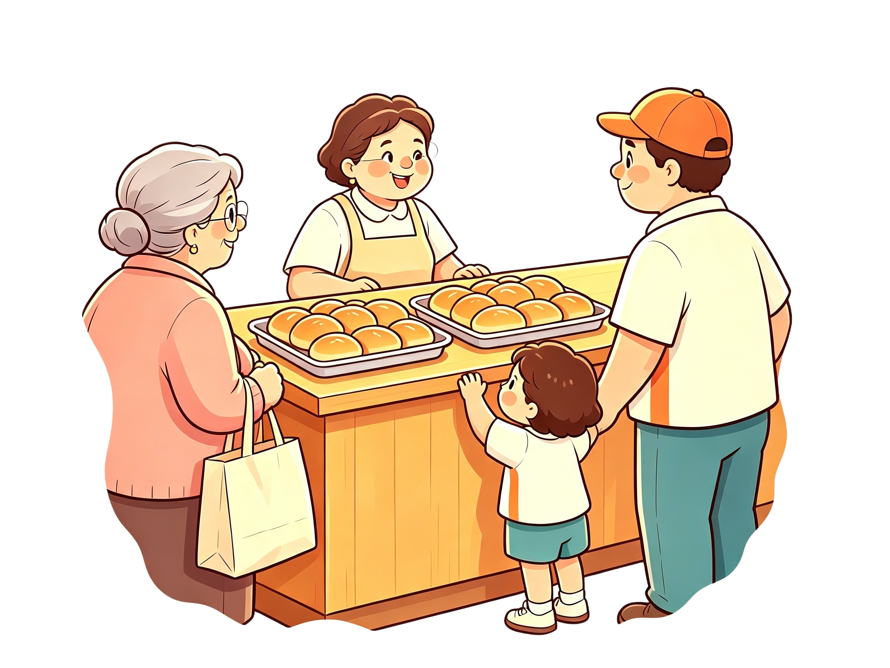

Evaluación gamificada
Son las cinco. Diez desafíos, y cada uno te entrega una pieza del anuncio. Cuando las tengas todas, lo armas y lo gritas para todo Villa Duarte.

Toca un pedido y después su total.
Voltea de dos en dos y reúne cada grupo con su total.
El carro llegó sin la nota. Abre las tres pistas y averigua cuántos panes trajo.
El cartel del salto de dos se partió en cuatro. Toca una pieza y luego su hueco.
Mira las dos series y descubre qué números aparecen en las dos.
Arma exactamente 24 panes con las bandejas que quieras. Hay más de un camino.
Hay 4 bandejas y cada una trae 5 panes. Yeirán cuenta de 5 en 5 y Kelvin de 4 en 4.
Marca solo las frases que sean verdad. Después, da tu veredicto.
Kelvin para en un colmado cada seis cuadras. Escribe la cuadra de la próxima parada.
Junta cada pedido con el salto que le sirve. Al acertar, las dos tarjetas se van juntas.
Estas son las bandejas del día. Arma el anuncio tocando las piezas en orden.
Anuncio dado
Hoy en Villa Duarte salieron ocho bandejas de cinco panes: cuarenta panes contados de cinco en cinco.
Contaste por grupos, encontraste el salto que servía y dijiste el total sin ir de uno en uno. Eso es conteo salteado.